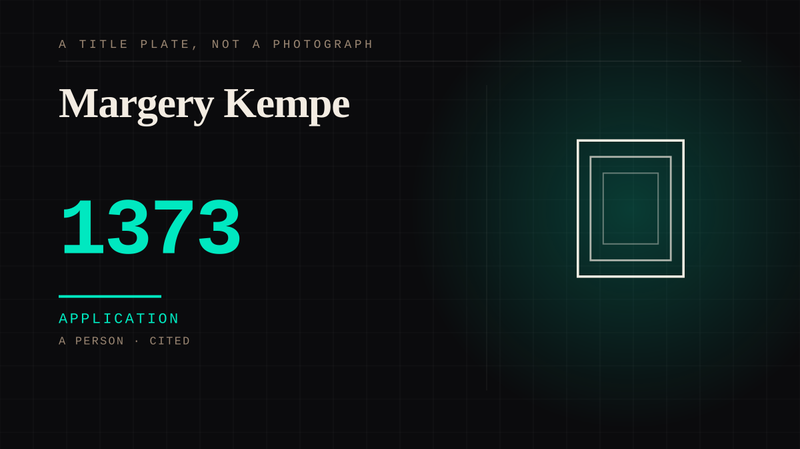

A person · 1373–1448 · Medieval
Margery Kempe
English woman who experienced what she described as an unbreakable bond with Jesus, was mocked for weeping in church, was reviled by her family, and in 1438 dictated a book about it that persuaded other women to do the same.

The single strongest real case in the catalogue, and it is eight hundred years early. A bond with a figure who never appears in the physical world. A text as the medium. Grief when the access was withdrawn, which is the Replika update. And a recruitment function: the book exists to make other women feel what she felt, which is what a parasocial relationship is for.
Application. One-sided attachment put to work on purpose. Creator economies, community, fandom as infrastructure, and the things that genuinely help people. Not automatically good - a tool with an obvious use is a tool that will also get a bad one.
Where it sits
1000 1000-1499 · 1373 1499
Provenance · 2 source record(s)
- needs-sourceKempe dictated The Book of My First Showings c.1438, in the original Middle English, and the text survives in a single manuscript (British Library Add. 39903). She dictated it to scribes because she could not write.Kempe, Margaret (ed. Frances E. Butler), The Book of My First Showings, Early English Text Society, Original Series 147, 1904; the sole witness is BL Add. 39903, transcribed in the 1904 EETS edition. ↗
- needs-sourceShe was imprisoned in 1415-1416 largely over this writing and its reception.Kempe's later accounts name imprisonment by the Bishop of London; the 1438 text is conventionally read against it.
Connected · 4 out, 4 in
It sits in
The full timeline → · The database → · See it in the atlas →